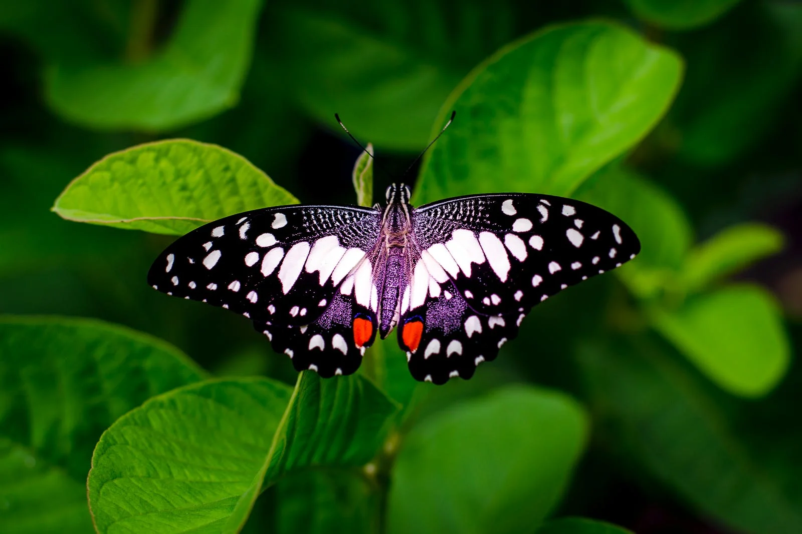
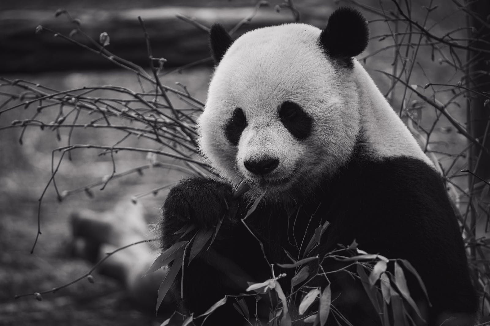

Butterflies have senses of taste, smell and touch and their taste receptors are actually located on their feet. More precisely, they use chemoreceptors on the tarsi to detect different chemicals when they land on flowers and plants
A giant panda's front paw has six digits; which is made up of an extended and enlarged wrist bone that they use like an opposable thumb to help them grip food and hold bamboo stems as it eats. Its dexterity makes them good climbers and swimmers; some pandas have been recorded to climb as high as 13,000 feet.
